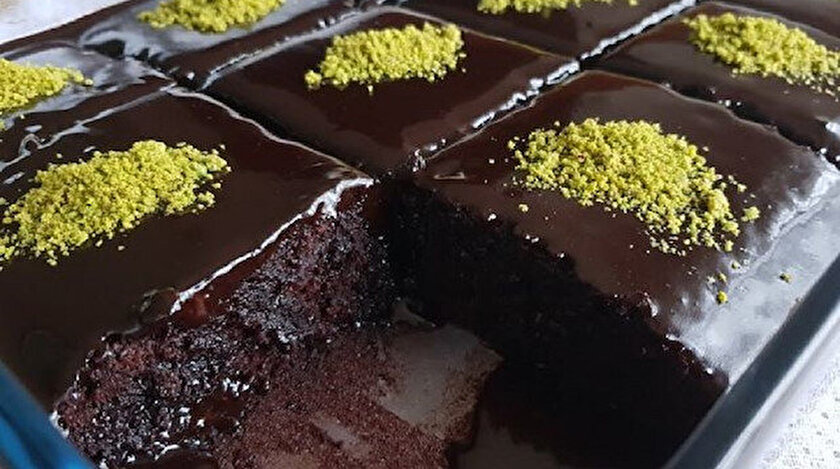

Kaç Kişilik: 9 Dilim |
Hazırlama Süresi: 10 dakika |
Pişirme Süresi: 20 dakika

Malzemeler
- 2 adet yumurta
- 1 su bardağı toz şeker
- 1/2 su bardağı ayçiçek yağı
- 1 su bardağı süt
- 2 yemek kaşığı kakao
- 1 su bardağı un
- 1/2 paket kabartma tozu
- 1 paket vanilya
Islak Kek Nasıl Yapılır?
Afiyet Olsun ;)
- Yumurtaları bir kaba kırın ve üstüne şekeri ekleyin. Bir mikser yardımıyla köpük köpük olana deki, yaklaşık 5 dakika boyunca çırpın.
- İçine sıvı yağı, sütün yarısını ve kakaoyu ekleyin ve tekrar karıştırın. Kalan yarım bardak sütü bir kenara ayırın. Hazırladığınız bu karışımdan da ½ su bardağı kadarını bir kenara ayırın.
- Kalan karışıma unu, kabartma tozunu ve vanilyayı ekleyin ve 2 dakika daha mikserle çırpın.
- Hazırladığınız kek hamurunu, sadece dibini yağladığınız kare bir fırın kabına boşaltın. Önceden ısıtılmış 180 derece fırında yaklaşık 20 dakika pişirin.
- Keki fırından aldıktan sonra dilimleyin ve bir kenara ayırdığınız kakaolu karışımla, kalan sütü birletirip, karıştrın ve sıcak kekin üstüne gezdirin. Gezdirirken tüm kekin ıslanmasına dikkat edin.
- Kek, tüm sıvıyı çekip, soğuduktan sonra, üstünü fıstık ile süsleyerek servis edin.